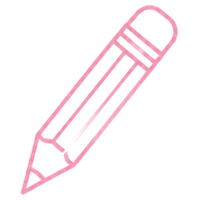

ככה נראה המיפוי מגן חובה ועד אמצע כיתה א'
בכל שקופית מופיעים המשפט שאומרים לילד והפריטים לסימון: הצליח, בעזרה, לא הצליח.
1
אנחנו מתחילות בהורים
ממלאים פעם אחת את פרטי הילד, ורושמים מה עלה בשיחה עם ההורים. הפרטים עוברים לבד לדוח המסכם.
2
כתיבת השם
את רואה אילו אותיות הילד מזהה ומשיים, איך הוא אוחז בכלי הכתיבה ומאיזה כיוון הוא כותב.
3
כתיב פונטי - כתיבה לפי הצלילים
בוחרים רמת קושי, הילד רואה איורים וכותב את מה שהוא שומע. את מסמנת צליל פותח, צליל סוגר וקשר בין אות לצליל.
4
אותיות ב-3 שלבים
כתיבה בהכתבה, שיום וזיהוי בהצבעה. כל אות מקבלת את הסימון שלה.
5
חשבון
ספירה, מנייה, כתיבת מספרים, השוואת כמויות ותרגילי חיבור.
6
בדיקת יכולת למידה
את מלמדת אות או ניקוד חדשים בזמן אמת ובודקת אם הילד מבין, מיישם, זוכר ומתקן את עצמו - הסעיף הזה שווה לך הרבה כסף*


 הברות לפי סימני ניקוד ומילות תפל
הברות לפי סימני ניקוד ומילות תפל כתיבה עם ניקוד וקריאה בקול
כתיבה עם ניקוד וקריאה בקול